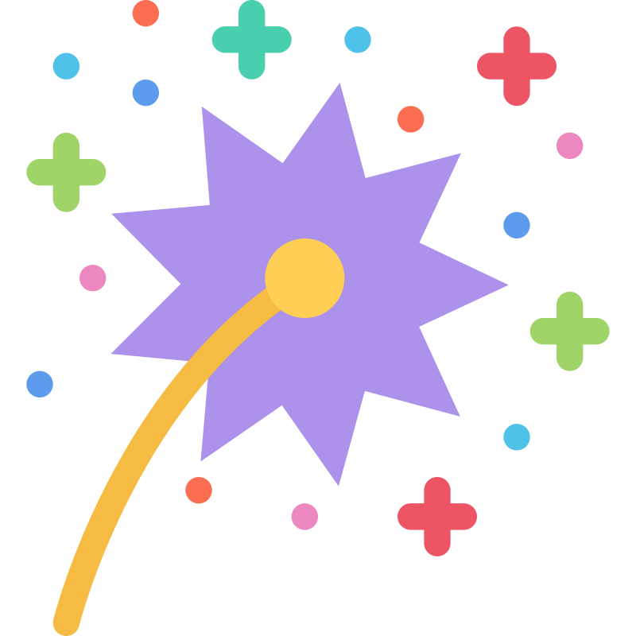

His research interests lie in 3D spatial reconstruction and generation, multimodal foundation models and world
models,
He is continuing to take his initial steps
in scientific research. He is always a learner.
News

(02/28/2026) Our paper
GapEval has been accepted to
CVPR 2026 Findings!
(01/10/2026) Our paper
GapEval has been Preprint!
(10/10/2025) Our paper
Paper2Web has been Preprint!
(03/25/2025) Our paper
Judge Everything has been accepted to
KDD 2025 (oral)!
(11/20/2024) Our paper
Judge Everything has been Preprint!
(09/01/2023)I begin my University life!
Publications
Selected publications are highlighted.
Equal contribution*.
Project lead✝.
Corresponding author✉.
Quantifying the Gap between Understanding and Generation within Unified Multimodal Models Chenlong Wang*,
Yuhang Chen*,
Zhihan Hu*,
Dongping Chen,
Wenhu Chen,
Sarah Wiegreffe,
Tianyi Zhou✉ arXivBibTeX CVPR 2026 Findings
GapEval is a framework evaluating inference consistency in multimodal models. Results show misalignment between
understanding and generation, exposing limits of “unified” architectures and calling for deeper cognitive convergence.
PAPER2WEB: LET’S MAKE YOUR PAPER ALIVE! Yuhang Chen*,
Tianpeng Lv*,
Siyi Zhang,
Yixiang Yin,
Yao Wan1✉,
Philip S. Yu,
Dongping Chen✝ WebsitearXivCodeBibTeX
In Submisson
Paper2Web is the first benchmark for assessing academic webpage generation, and PWAgent, an autonomous system
designed to bridge the gap between static PDFs and interactive project sites
JUDGE ANYTHING: MLLM AS A JUDGE ACROSS ANY MODALITY
Shu Pu§,
Yaochen Wang§,
Dongping Chen✝,
Yuhang Chen*
Guohao Wang*,
Qi Qin*,
Zhongyi Zhang*
Zhiyuan Zhang*,
Zetong Zhou*,
Shuang Gong*,
Yi Gui,
Yao Wan✉,
Philip S. Yu
WebsitearXivCodeDataBibTeX KDD 2025 oral
We extend MLLM-as-a-Judge across multiple modalities, present TaskAnything and JudgeAnything benchmarks that reveal
MLLM-as-a-Judge excel at judging MMU but struggle with MMG tasks.
RobustMark: Decoupled Defenses for Resilient Image Watermarking
Collaborator E, Collaborator F, ✝Template Author PaperProject CVPR 2026
A compact example for papers where the image card acts as a static teaser.
SceneVQA-3D: Grounded Question Answering Across 3D Environments
Collaborator G, ✝Template Author, Collaborator H
WebsitePaperCode ICLR 2026
Use entries like this one for VLM, 3D, robotics, or multimodal work.
Motion-R1: Reinforcement Learning for Motion and Reasoning ✝Template Author, Collaborator I, Collaborator J
WebsitePaperCode ICLR 2026
A generic publication summary that preserves the target site's information density.
LongVideo: Structured Diffusion for Minute-Scale Generation
Collaborator K, Collaborator L, ✝Template Author WebsitePaper Preprint
Keep project descriptions to one or two lines so the table layout remains stable.
NavReason: Structured Navigation Policies for Embodied Scenes
Collaborator M, ✝Template Author, Collaborator N
WebsitearXivCode ArXiv 2025
Another hidden publication row to exercise the foldable section behavior.
Compression Priors for Efficient Multimodal Models ✝Template Author, Collaborator O
PaperSlides ECCV 2024
Short summaries make it easy to scan long publication lists without overwhelming the page.
Temporal State Spaces for Long-Horizon Motion Synthesis
Collaborator P, Collaborator Q, ✝Template Author WebsitePaperCode ECCV 2024
The final hidden row gives the toggle enough content to demonstrate the expanded state.
Research Projects
Quantifying the Gap between Understanding and Generation within Unified Multimodal Models arXivBibTeX
GapEval is a framework evaluating inference consistency in multimodal models. Results show misalignment between
understanding and generation, exposing limits of "unified" architectures and calling for deeper cognitive convergence.
PAPER2WEB: LET'S MAKE YOUR PAPER ALIVE! WebsitearXivCodeBibTeX
Paper2Web is the first benchmark for assessing academic webpage generation, and PWAgent, an autonomous system
designed to bridge the gap between static PDFs and interactive project sites.
JUDGE ANYTHING: MLLM AS A JUDGE ACROSS ANY MODALITY WebsitearXivCodeDataBibTeX
We extend MLLM-as-a-Judge across multiple modalities, present TaskAnything and JudgeAnything benchmarks that reveal
MLLM-as-a-Judge excel at judging MMU but struggle with MMG tasks.
Research Experience
ONE Lab, HUST Nov. 2024 - Present
Multimodal Foudation Models and Multimodal Agents.
Outstanding Academic Performance Scholarship, 2023.9. Outstanding Academic Performance Scholarship, Technology Innovation Scholarship, 2024.9. Second Prize in the Hubei Province Artificial Intelligence Practical Competition, 2025.5. Third Prize in Computer System Development Capability Competition, 2025.9. Second Prize in RuiKang Robot Developer Competition, 2025.9. Outstanding Academic Performance Scholarship, Technology Innovation Scholarship, 2025.10.
Here are photos I took while traveling in Japan. I love traveling in Japan—the people, the scenery, and the food.
I hope to study there someday and eventually settle down in this wonderful and fascinating country.